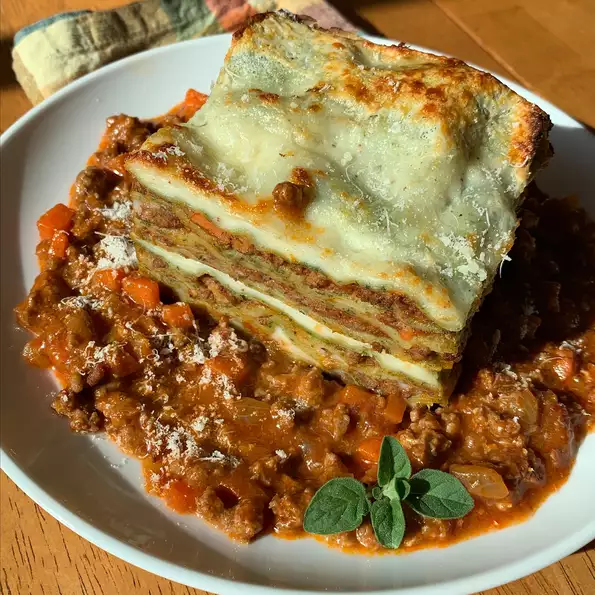

Now found exclusively at one well-known pizza garden in Gravesend, Brooklyn, this style of pizza was once found in neighborhood bakeries. This pizza is deceivingly light, crisp, and slightly spicy. Enjoy with a can of soda.
Combine water and yeast in a small bowl. Let stand until yeast softens and begins to form a creamy foam, about 5 minutes.
Combine flour and salt together in the bowl of a stand mixer fitted with a dough hook attachment. Pour in yeast mixture. Knead dough until smooth, about 7 minutes.
Grease a large bowl lightly with olive oil. Form dough into a tight ball and lightly grease the top. Place in the bowl; cover loosely with plastic wrap. Let rise until doubled in volume, about 30 minutes.
Mix crushed tomatoes and pizza sauce together in a bowl to make sauce.
Grease a heavy-gauge rimmed 12x17-inch baking sheet generously with olive oil. Press dough into the bottom. Prick dough all over with a fork. Arrange mozzarella cheese slices over dough; cover with 1 cup sauce. Sprinkle Pecorino Romano cheese on top. Drizzle remaining olive oil over pizza.
Let pizza rise in a warm area until puffy, about 1 hour.
Preheat oven to 450 degrees F (230 degrees C).
Bake pizza on the center rack of the preheated oven until edges are very dark brown but top is not burnt, 15 to 20 minutes. Cool in the pan for 5 minutes before slicing into squares.
If substituting regular flour for the gluten-free kind, use 1 1/4 cups in the pasta and 1/4 cup in the sauce.
271 calories; protein 10.7g; carbohydrates 33.4g; fat 10.6g; cholesterol 19.5mg; sodium 663.1 mg.